Nyzo version 572 (commit on GitHub) improves control of memory use in NodeManager.
This version affects the verifier only. This is the only run mode that uses the NodeManager.
The openness of the Nyzo verifier, with its willingness to accept information on incoming connections, makes it especially susceptible to resource-consumption attacks. In the past, various potential attacks have been found by members of the community. The NicknameManager issue, addressed in version 500, resulted in a ∩75,000 bounty. The signature-buffer issue, addressed in version 503, resulted in a ∩225,000 bounty. The TIME_WAIT issue, addressed in version 539, resulted in a ∩30,000 bounty.
We will not recommend a specific bounty amount for this issue. We encourage the cycle to provide a bounty that appropriately acknowledges the value that report of this issue provides to the community. The fixes in this build eliminate a vulnerability that, if exploited correctly, could have resulted in a cycle stall, tremendous hassle for operators of verifiers, and loss of verification positions in the cycle.
Also, we ask that the cycle considers the NodeManager improvements in version 570 when determining the bounty. Those improvements were due to this report, but the report was not mentioned at the time due to the incomplete nature of the fixes in that version.
As the current cycle transaction mechanism is frustratingly unreliable, we do feel that delaying bounty transactions until the deployment of NTTP-3 is warranted.
The reporters of this issue have provided the following addresses for receiving a bounty:
In Node, the communicationFailureInactiveThreshold constant and communicationFailureCount field were added to encapsulate communication failure information. The identifierChangeTimestamp was eliminated, as there is no longer a restriction on frequency of IP changes.
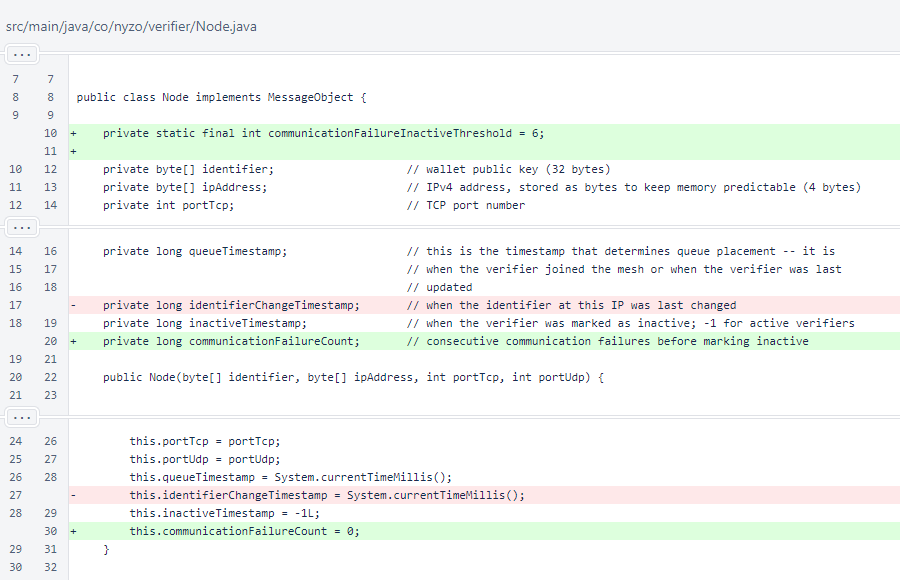The methods for getting and setting identifierChangeTimestamp were removed.
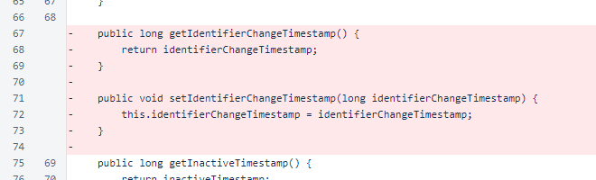Indentation of the isActive() method was corrected. The markSuccessfulConnection() and markFailedConnection() methods were added to track reachability.
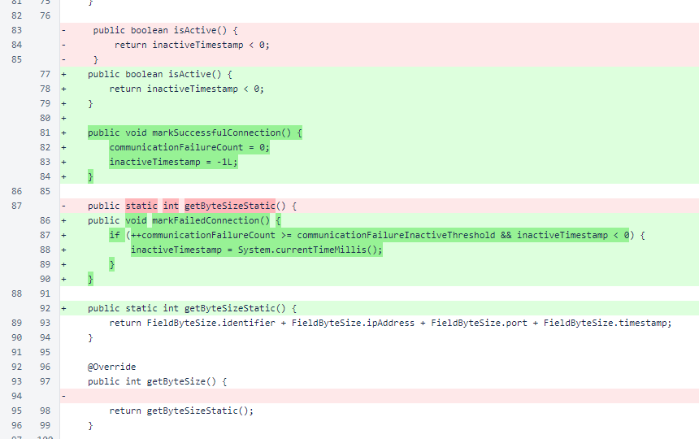In NodeManager, the consecutiveFailuresBeforeRemoval constant and ipAddressToFailureCountMap field used for reachability were removed. Their functionality is now encapsulated in the Node class.
The maximumNodesPerInCycleVerifier and maximumNewNodeMapSize constants were added for enforcing new limits. The newNodeIpToPortMap field stores nodes that have sent node joins to this verifier but have not yet been added to the main map of nodes, ipAddressToNodeMap.
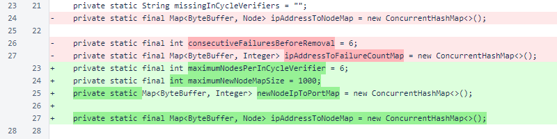The meshRequestWait and meshRequestSuccessCount fields were both changed from int to AtomicInteger to improve thread safety.
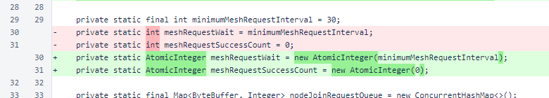In the NodeManager.updateNode() that takes a Message argument, a check is performed to determine whether the message is a node-join response. Responses are not processed in the MeshListener, so a response would only be available as a result of an outgoing node-join message sent by this verifier.
The other overload of updateNode() no longer returns a boolean value to indicate whether the node was added to the map, and node joins are no longer immediately sent when a new node is encountered.
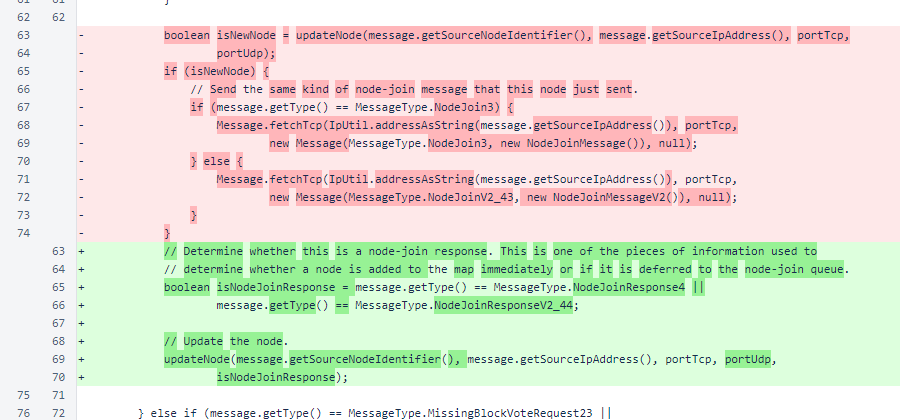When updateNode() is called with a message of type MissingBlockVoteRequest23 or MissingBlockRequest25, a successful connection is registered on the node. This has the same effect as the previous setInactiveTimestamp() method call, but code readability and encapsulation are improved.
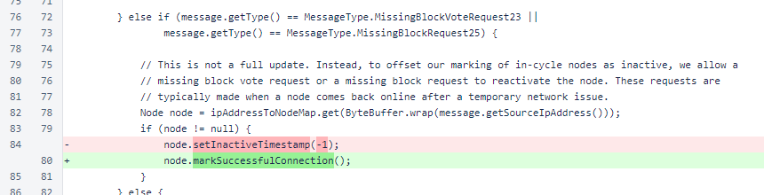In NodeManager.addTemporaryLocalVerifierEntry(), a true value is passed for the new argument of updateNode(). This causes the temporary entry to be added to the primary map immediately.
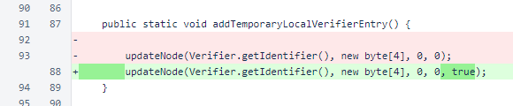For the private overload of updateNode(), synchronization was removed and the isNodeJoinResponse argument was added. The return value was eliminated. The logic was reorganized to have fewer cases.
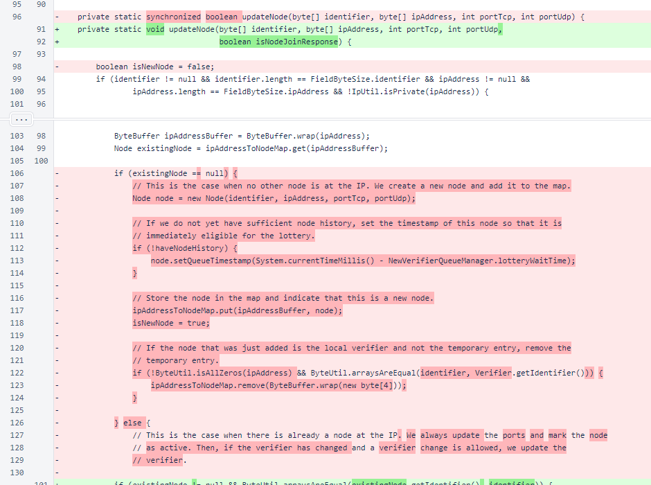At the top level, there are now only two cases. If the IP address and identifier are the same as those of a node already in the map, the ports are updated and a successful connection is marked. In all other situations, the node is treated as a new node, being removed from the map if a node is already present at the IP. Note that the result of removing and re-adding a node to the map is similar to the result of the previous logic, which reset queue timestamps when identifiers changed. The new logic, though, is simpler and easier to protect from memory attacks.
If the node is in the cycle, or if the update is due to a node-join response, the node is immediately added to the primary map, ipAddressToNodeMap. This is subject to a maximum of 6 nodes per identifier. This limit allows suitable leeway for backup and replacement nodes. Inactive nodes are eventually removed from the map, so there is no concern that cumulative IP changes for a node will limit the ability to add new nodes.
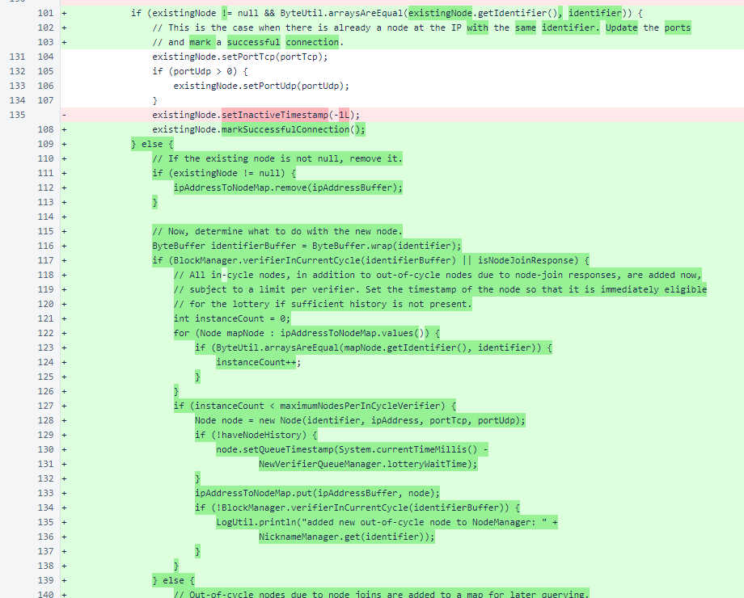All out-of-cycle nodes that are not due to node-join responses are added to a size-limited map for later querying. While this does not impose a limit on the memory usage of the NodeManager, it does impose a limit of the rate of increase of memory usage.
As before, the temporary entry is removed if an actual entry for the verifier is encountered.
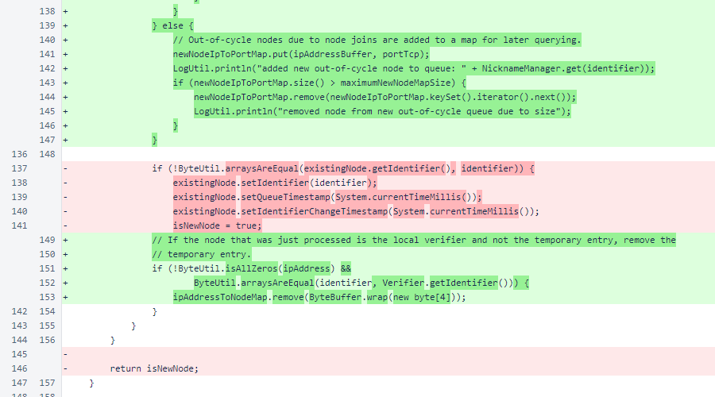Synchronization was removed from the demoteIdentifier() method. The ipAddressToNodeMap is a ConcurrentHashMap, so this method is thread-safe.
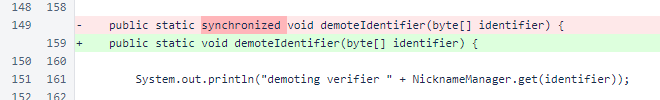The NodeManager.markFailedConnection() method is now basically a pass-through to the Node.markFailedConnection() method. Marking nodes as inactive due to repeated communications failures is now encapsulated in the Node class.
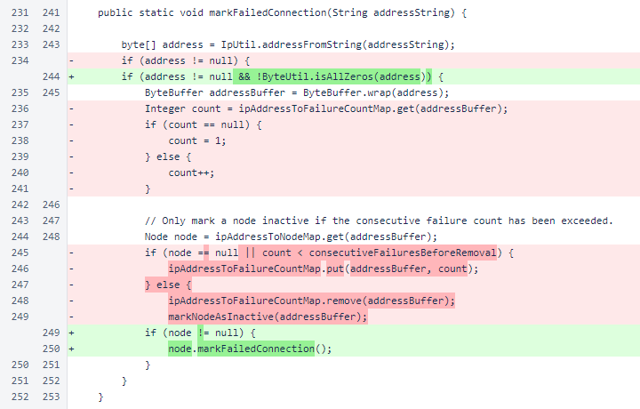Similarly, the NodeManager.markSuccessfulConnection() method is now essentially a pass-through to the Node.markSuccessfulConnection() method.
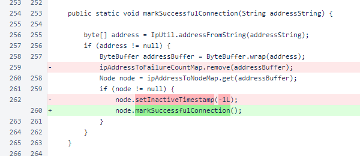NodeManager.markNodeAsInactive() was removed. This behavior is now encapsulated in the Node class and controlled through Node.markFailedConnection() and Node.markSuccessfulConnection().
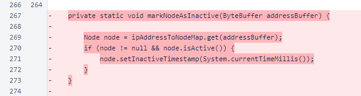Synchronization was removed from NodeManager.updateActiveVerifiersAndRemoveOldNodes(). All code in this method is thread-safe.
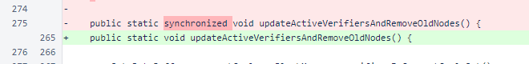Synchronization was removed from NodeManager.requestMesh(), and the method was renamed to reloadNodeJoinQueue() to better reflect its purpose.
Usage of meshRequestWait was updated for its change from int to AtomicInteger. The differing semantics of the post-decrement meshRequestWait-- and pre-decrement meshRequestWait.decrementAndGet() are inconsequential in this situation.
Use of MessageType.FullMeshRequest41 was eliminated to further emphasize cycle connectivity. Out-of-cycle verifiers should make their presence known to in-cycle verifiers. In-cycle verifiers need not actively search for out-of-cycle verifiers.
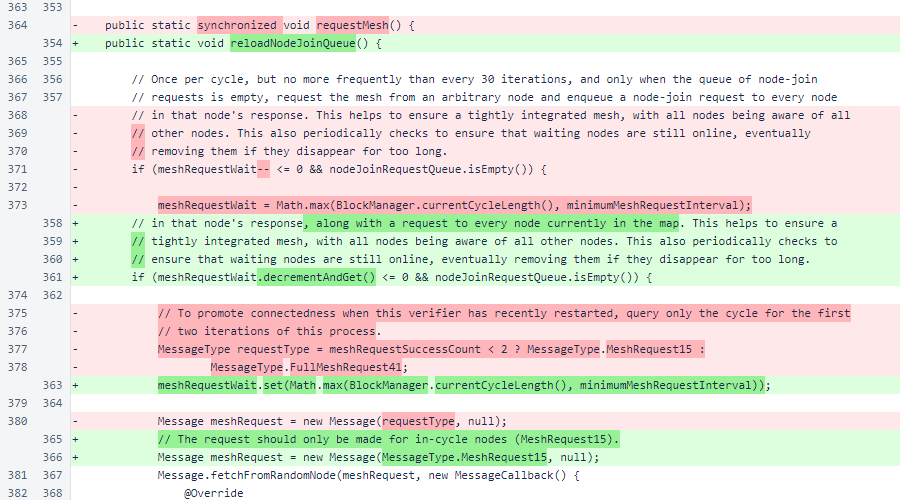Another usage of meshRequestWait was updated for its changed data type, along with two usages of meshRequestSuccessCount.
Node joins are enqueued for all IP addresses in the newNodeIpToPortMap. This is how new out-of-cycle nodes are added to the primary map. Previously, nodes would be added immediately when a node-join message was received. That means that someone would need to control an IP address for only moments in order to cause this verifier to register an entry. Now, control needs to be for much longer, as the verifier reloads its node-join queue on its own schedule, and the next reload may be several hours from when the initial join was sent. Thus, an inexpensive attack on memory consumption is changed to a situation where the attacker is essentially just another out-of-cycle verifier.
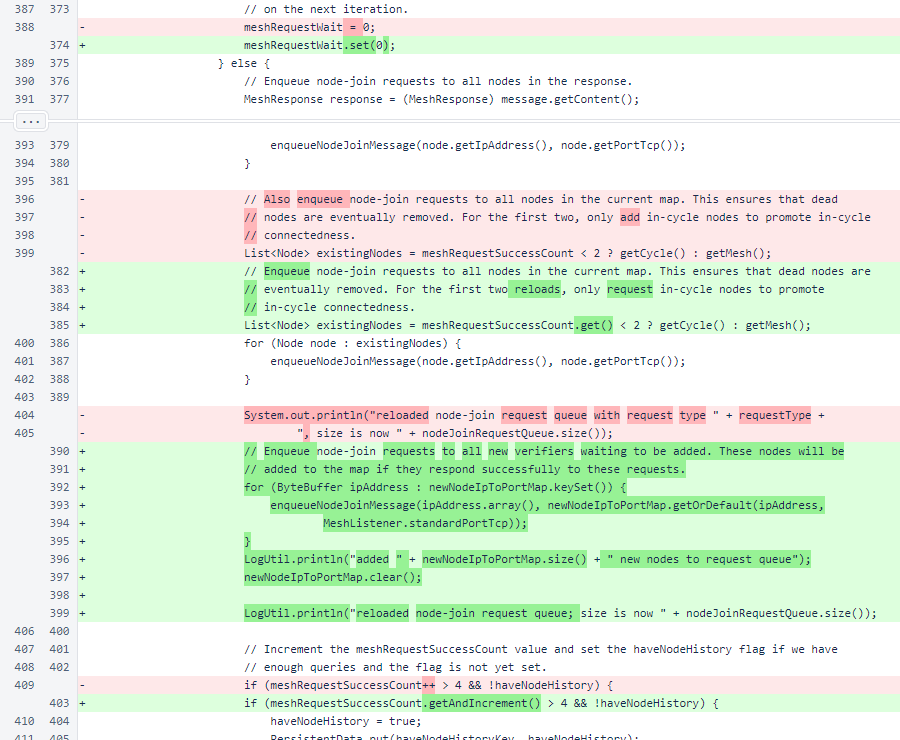Synchronization was removed from NodeManager.demoteInCycleNodes. The ipAddressToNodeMap is a ConcurrentHashMap, so the method is thread-safe.
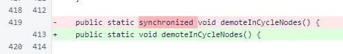In NodeManager.persistNodes(), a placeholder is written for the identifier-change timestamp. This preserves the structure of the file.
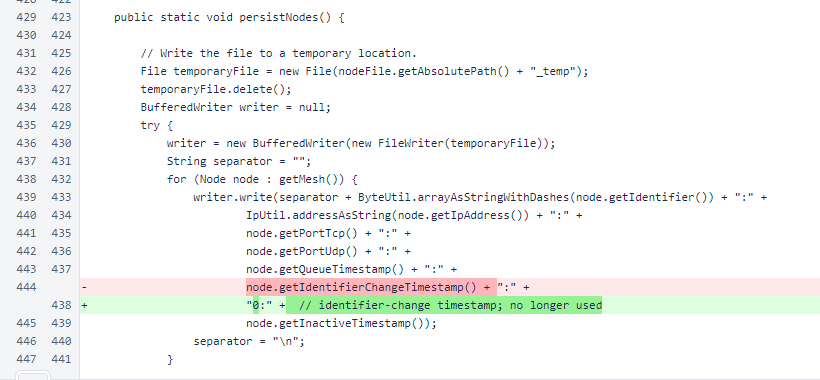In NodeManager.loadPersistedNodes(), reading and setting of the identifier-change timestamp was removed.
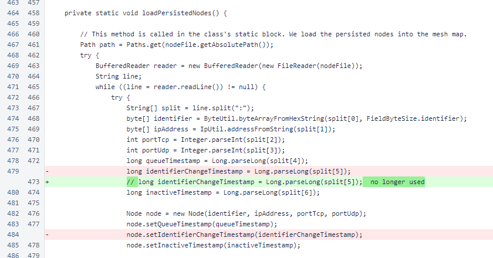In Verifier.sendNodeJoinMessage(), which sends a node-join to a TrustedEntryPoint, the version of the message was updated.
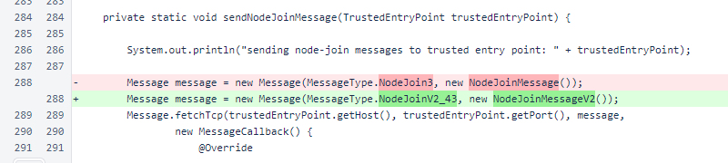In Verifier.verifierMain(), comments and a called method's name were updated.
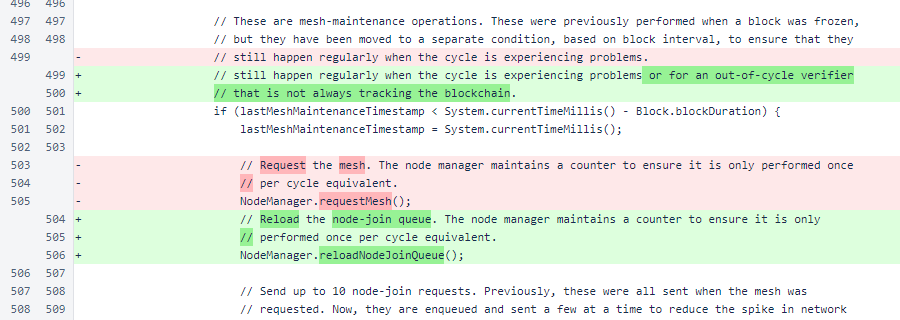